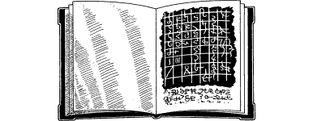

86
Upon reaching the crater you are relieved to discover that its steep sides are covered with hardened lava, dusted with loose volcanic ash. You climb towards the rim, pausing halfway to take cover from the searing hot winds in the lee of a jagged boulder. While you are sheltering here, you take the opportunity to consult the Tome of Darkness given to you by Lord Rimoah. Its metallic pages appear as blank as when you first looked through them, but then you discover a page that is now very different. Bold black text stands out from a page that glimmers like mirrored steel. Using your Magnakai Discipline of Pathsmanship, you are able to decipher much of the arcane script which fills this page.
{kind=link}

The text tells of a creature called Huan’zhor the Dragonlord and of his Throne of Power which is located within ‘a nest of fire atop the Tree of the Wyrm’. It lists the many acts of evil perpetrated by Huan’zhor during his long existence, for which he has been generously rewarded by Naar; the Dark God has granted him this fiery domain within the Plane of Darkness. It continues at length to describe the creatures that are enslaved to him, which include the Lavas, the Zarthyn, and the Chugotha. But most interestingly it reveals his secret name ‘Zheva’ which can be used to bind him and tells of a magical item, the Scarab of the Wingless Dragon, which can be found in the ‘nest of fire’ and which can be used to effect an escape from his realm.
You close the Tome and slip it back into your pack. From your makeshift shelter you command a view over the surrounding landscape in which there is nothing that remotely resembles a nest or a tree. All you are able to discern with any clarity is the blazing fire-storm which is now sweeping across this charred land. Fearful of what could befall you when the fire-storm reaches this exposed flank of the crater, you continue your climb and seek cover within the crater itself.
If you have ever visited the city of Tahou in a previous Lone Wolf adventure, turn to 194.
If you have never visited this city, turn to 339.